Aprende a usar tu CRM en 15 minutos.
Esta guía explica qué hace cada pantalla, cuándo usarla y cómo sacarle el máximo provecho. No necesitas saber nada de CRM: empezamos por lo básico.
Las capturas usan datos de ejemplo para que se entienda cada pantalla. Tu CRM en línea empieza vacío, listo para tus datos reales. Para practicar sin tocar nada real, usa la demo sin conexión.
Conceptos clave
Un CRM (del inglés Customer Relationship Management) es el lugar donde tu equipo guarda a quién se llamó, qué se habló, qué se vendió y quién debe. Reemplaza la libreta, el Excel y la memoria de cada persona.
Prospecto
Una persona que todavía no ha comprado, pero podría. Puede venir de una lista, un referido o un anuncio.
Cliente
Un prospecto que ya compró. En el CRM queda en la etapa Venta y se le sigue atendiendo para la recompra.
Etapa
En qué punto del proceso está la persona: nuevo, intentando contactar, contactado, cita agendada, cita confirmada, demo realizada, venta o perdido.
Fuente y referido
Cómo llegó la persona (Florida Mall, evento, referido, Facebook…). Si es referido, se anota quién la refirió; si es de un evento, el nombre del evento.
Seguimiento
La fecha y hora en que hay que volver a contactar a alguien. Aparece como tarea pendiente de la agente. Es la clave para no perder ventas.
Resultado del intento
Cómo terminó cada intento: no contestó, buzón de voz, WhatsApp enviado, email enviado, llamar después, interesado, cita agendada, venta, no interesado, número incorrecto o no volver a llamar.
Intentos de contacto (X/12)
Cada intento registrado suma uno al contador y guarda número, fecha, hora y agente solos. Si se llega a 12 intentos sin lograr contacto, el prospecto se archiva como Perdido / Sin respuesta (no se borra).
Cita
La demostración en casa del cliente: fecha, hora, dirección y quién la realiza. Se confirma, se marca como realizada o se reagenda.
Cartera
El dinero que te deben: ventas hechas que todavía tienen saldo pendiente.
Recaudo
El dinero que ya entró: cada pago o abono que registra el equipo.
Las etapas: del primer contacto a la venta
Cada prospecto avanza por estas etapas. La mayoría de los cambios los hace el CRM solo según el resultado de cada llamada o cita:
Los colores del CRM
El CRM usa los colores corporativos azul y blanco: fondo blanco, botones y acentos en azul y el menú de la izquierda en azul marino. Con el botón de la luna (arriba) puedes cambiar a modo oscuro. Además, cada etapa tiene su propio color para reconocerla de un vistazo:
Los colores de cada etapa
Cada etapa tiene su color y se aplica solo. Lo verás en la ficha, en la lista de clientes (franja a la izquierda de cada fila), en el embudo, en la agenda y en el Inicio, para saber el estado de cada persona sin abrir su ficha:
Ingreso, perfil y roles
Entrar al CRM
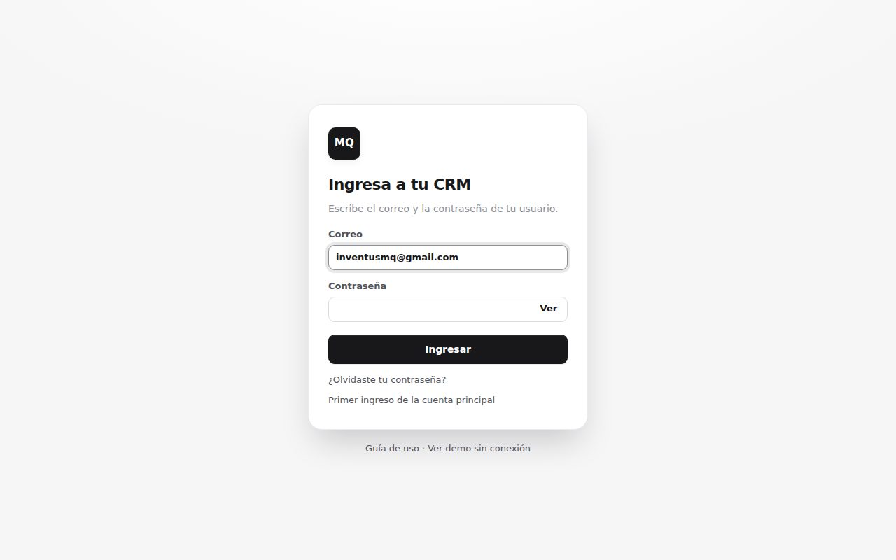
- Abre el CRM en
crmsystempb.dgp-link.comdesde el computador, la tablet o el celular. No hay que instalar nada. - Escribe tu correo y tu contraseña y presiona Ingresar. Con el botón Ver puedes revisar lo que escribiste.
- El CRM te recuerda en ese dispositivo: no tendrás que ingresar cada vez, hasta que cierres sesión.
¿Todavía no tienes contraseña?
Cuando la administración te crea un usuario, te llega un correo de Firebase con un enlace para crear tu contraseña. Si no lo ves, revisa la carpeta de spam. También puede darte una contraseña temporal.
¿La olvidaste?
En la pantalla de ingreso presiona "¿Olvidaste tu contraseña?", escribe tu correo y te llegará un enlace para crear una nueva.
inventusmq@gmail.com) es la dueña del CRM: siempre es administradora y desde ella se crean todos los demás usuarios. Ya está creada, así que entra como cualquier persona, con su correo y contraseña. Si algún día olvidas la contraseña, usa "¿Olvidaste tu contraseña?".Tu primer ingreso: nombre y apellido
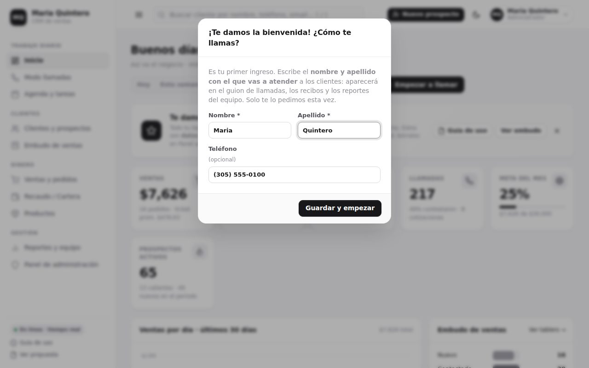
La primera vez que entras (y solo esa vez), el CRM te pide tu nombre y apellido, más tu teléfono si quieres. Ese nombre es el que ven tus clientes y tu equipo: aparece en el guion de llamadas ("le habla Andrea de…"), en los recibos, en el historial de cada cliente y en los reportes. No se puede saltar, pero toma diez segundos.
Tu menú
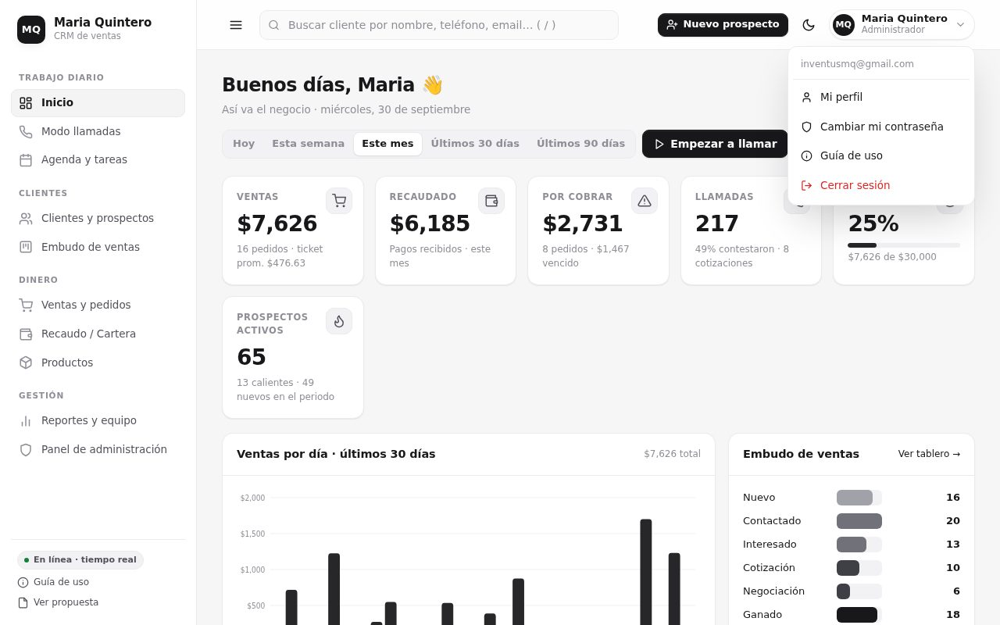
- Mi perfil: corrige tu nombre, apellido o teléfono y pon tu foto de perfil (desde el celular puedes tomarla con la cámara). La foto aparece junto a tu nombre en todo el CRM.
- Cambiar mi contraseña: te llega un correo con el enlace para crear una nueva.
- Guía de uso: abre esta guía.
- Cerrar sesión: úsalo siempre en computadores compartidos.
Moverse por el CRM
- Usa el menú de la izquierda para ir a cada sección. En el celular, el menú se abre con el botón ☰.
- Busca a cualquier cliente con el buscador de arriba: escribe parte del nombre, del teléfono o del email. Presiona / para ir directo al buscador.
- "Nuevo prospecto" está siempre arriba, en cualquier pantalla.
Los cuatro roles
Administrador
La dueña del negocio. Ve toda la información: ventas, montos, pagos, cartera, reportes y estadísticas. Crea usuarios y decide sus permisos.
Supervisor
Coordina al equipo: ve y reasigna a todos los clientes y candidatos y ve los reportes. No ve montos, salvo que la administración le dé el permiso.
Agente / Call center
Solo lo necesario para trabajar: sus prospectos, llamadas, seguimientos y citas. Puede registrar ventas (productos y canal), pero no ve montos, pagos ni saldos.
Reclutamiento
Solo el módulo de Reclutamiento: sus candidatos, entrevistas y seguimientos. No ve clientes ni ventas.
Qué puede ver cada rol
| Permiso | Admin | Supervisor | Agente | Reclutamiento |
|---|---|---|---|---|
| Prospectos, llamadas, seguimientos y citas | ✓ | ✓ | Los suyos | — |
| Registrar ventas (productos, canal, entrega) | ✓ | ✓ | ✓ | — |
| Información financiera: montos, pagos, saldos, Recaudo / Cartera, metas de venta | ✓ | — | — | — |
| Reportes y estadísticas | ✓ | Sin montos | — | — |
| Ver todo el equipo y reasignar | ✓ | ✓ | — | — |
| Reclutamiento (candidatos) | Todos | Todos | — | Los suyos |
| Exportar a Excel / CSV | ✓ | ✓ | — | — |
| Usuarios, configuración, productos y eliminar registros | ✓ | — | — | — |
Permisos a la medida de cada persona
El rol trae los permisos de la tabla, pero la administración puede ajustarlos uno por uno para cada usuario en Panel de administración → Usuarios → Editar → Permisos. Por ejemplo: darle a una agente también el permiso de Reclutamiento, o darle a la supervisora el permiso de Información financiera. Los cambios se aplican la próxima vez que esa persona entre (o recargue la página).
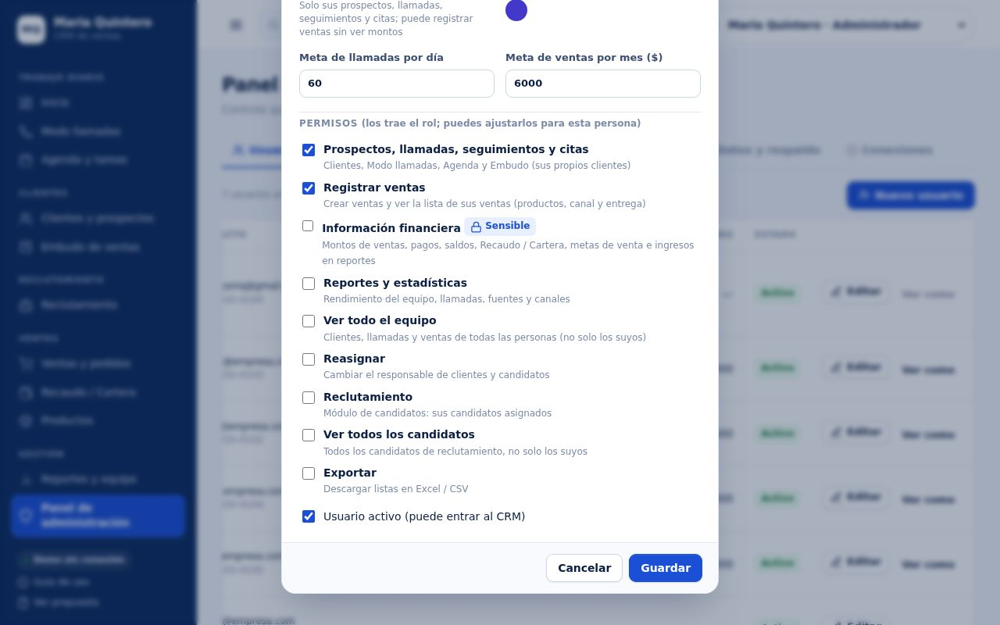
Inicio
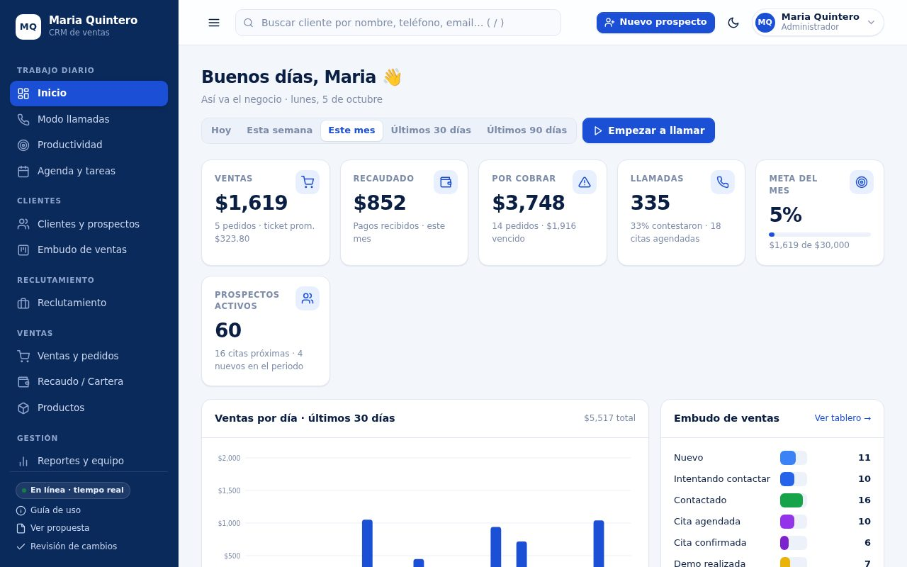
Es lo primero que ves al entrar. La administración ve los números de todo el negocio, con montos; la supervisión ve todo el equipo sin montos; cada agente ve solo los suyos: llamadas, contactos, citas, demos, ventas (en cantidad) y su meta de llamadas del día. Quien solo trabaja Reclutamiento entra directo a esa sección.
Qué significa cada recuadro
| Recuadro | Qué te dice |
|---|---|
| Ventas | (Solo con Información financiera.) Cuánto se vendió en el periodo y cuántos pedidos. El ticket promedio es lo que se vende en promedio por pedido. |
| Recaudado | Cuánto dinero entró de verdad (pagos registrados). |
| Por cobrar | Cuánto te deben en total y qué parte ya está vencida. |
| Llamadas | Cuántas llamadas y WhatsApp se registraron, qué porcentaje contestó y cuántas citas se agendaron. |
| Meta del mes | El avance contra la meta de ventas. Las metas se definen por persona en Administración. |
| Prospectos activos | Cuántos prospectos están en proceso y cuántas citas próximas hay. |
Debajo encuentras las ventas por día, el embudo, los seguimientos para hoy, las próximas citas y el ranking del equipo. Arriba puedes cambiar el periodo: Hoy, Esta semana, Este mes, 30 o 90 días.
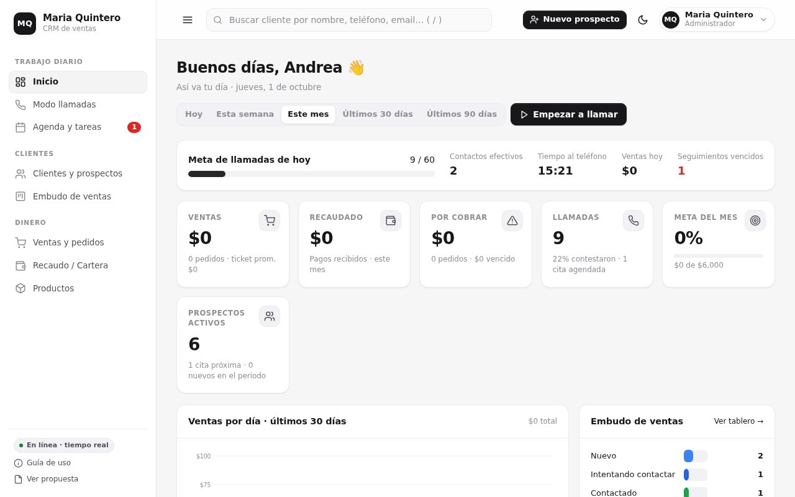
Modo llamadas
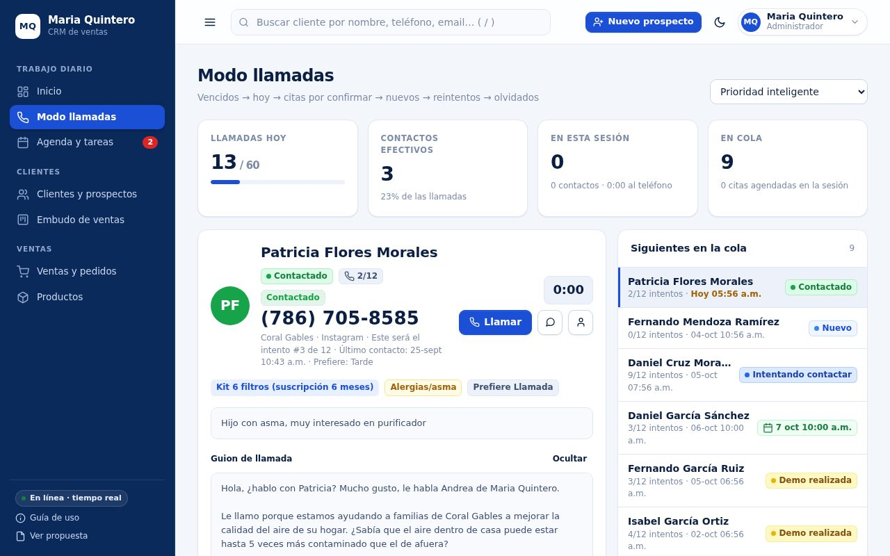
En vez de pensar "¿a quién llamo ahora?", el CRM arma una cola ordenada por prioridad con los clientes de cada agente. Primero van los seguimientos vencidos, luego los programados para hoy, luego las citas que hay que confirmar, luego los nuevos que nunca se han llamado, después los reintentos y por último los que llevan días sin contacto.
Paso a paso para hacer una llamada
- Mira quién sigue. Arriba aparece el nombre, el teléfono, la etapa, el último resultado, los intentos, quién lo refirió y los productos que le interesan. Si tiene cita o saldo pendiente, también lo verás.
- Presiona "Llamar". Con el teléfono integrado la llamada sale desde el computador con tus audífonos; sin él, en el celular marca directo y en el computador abre tu aplicación de llamadas. El cronómetro arranca solo.
- Apóyate en el guion. Ya trae el nombre del cliente, el tuyo y su ciudad. La administración lo puede cambiar.
- Elige el resultado del intento con un clic (o con las teclas 1 a 9).
- Escribe un comentario: qué se habló, objeciones, a qué hora pidió que la llamen. La fecha, la hora y tu nombre se guardan solos.
- Revisa el seguimiento. El CRM lo programa solo según el resultado, pero puedes elegir fecha y hora a mano o usar "Mañana", "3 días", "1 semana" o "2 semanas" (los botones conservan la hora que elegiste). Con "Llamar después" la fecha y la hora son obligatorias.
- Presiona "Guardar y siguiente". Todo queda en el historial del cliente y pasa la siguiente persona de la cola.
Qué hace cada resultado automáticamente
| Tecla | Resultado | Lo que el CRM hace solo (además de sumar un intento y guardar la fecha y hora) |
|---|---|---|
| 1 | No contestó | Lo pasa a Intentando contactar y programa volver a llamar mañana. |
| 2 | Buzón de voz | Intentando contactar, reintento mañana. |
| 3 | WhatsApp enviado | Intentando contactar, seguimiento mañana. |
| 4 | Email enviado | Intentando contactar, seguimiento mañana. |
| 5 | Llamar después | Contestó y pidió que la llamen luego. Exige fecha y hora del próximo seguimiento. Ese día aparece en "Seguimientos de hoy", a esa hora llega un aviso, y si pasa la hora sin llamar queda en Vencidos. |
| 6 | Interesado | Lo pasa a Contactado (etapa) y programa seguimiento en 2 días. |
| 7 | Cita agendada | Abre el formulario de la cita (fecha, hora, dirección y quién hace la demostración) y lo pasa a Cita agendada. |
| 8 | Venta | Botón dorado. Abre un formulario corto para elegir qué producto se vendió (y la cantidad), registra la venta a nombre de quien llamó, calcula su comisión y pasa al cliente a Venta. |
| 9 | No interesado | Lo pasa de inmediato a Perdido / Sin respuesta (motivo: No interesado). |
| 0 | Número incorrecto | Perdido / Sin respuesta (motivo: Número incorrecto). |
| — | No volver a llamar | Perdido / Sin respuesta y lo agrega a la lista de no llamar: ya no sale en ninguna cola. |
Las colas disponibles
- Prioridad inteligente: la recomendada para el día a día.
- Seguimientos de hoy: solo lo que está programado o vencido.
- Nuevos sin contactar: ideal cuando llega una lista nueva.
- Citas por confirmar: clientes con cita agendada a los que hay que confirmar.
- Reintentar no contestados: quienes no contestaron hace más de 3 horas.
- Cobranza: clientes con saldo pendiente.
Productividad del equipo Solo administración
En el menú Productividad (o con el botón "Productividad del equipo" en Modo llamadas) la administración ve, día por día, cuánto trabajó cada agente. Las agentes no ven esta pantalla.
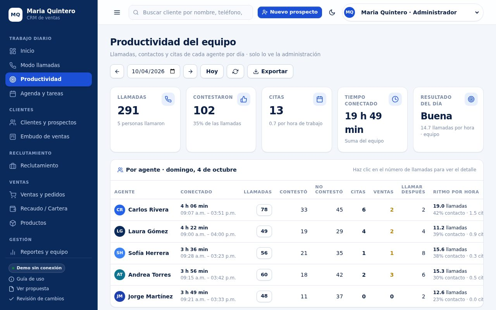
- Conectado: minutos que tuvo el CRM abierto y en uso (o con el cronómetro de una llamada corriendo), con la hora de entrada y de salida.
- Llamadas: haz clic en el número para ver cada llamada con su hora, cliente, resultado (contestó, no contestó, cita, seguimiento, descartado), duración y comentario, y el desglose hora por hora.
- Ritmo por hora: llamadas por hora, porcentaje de contacto y citas por hora.
- Productividad: compara ese ritmo con las metas (20 llamadas, 30% de contacto y 1 cita por hora, que se cambian en Configuración) y la califica como Excelente, Buena, Regular o Baja.
- Embudo de conversión: por agente y por periodo (hoy, semana, mes, 30 o 90 días): llamadas → interesados → citas agendadas → ventas, con el porcentaje de cada paso, la conversión total (ventas ÷ clientes llamados) y la comisión.
- Resultado del día: una frase por agente, por ejemplo "2 h conectado · 47 llamadas (23.5 por hora) · habló con 23 (49%) · 5 citas: productividad excelente".
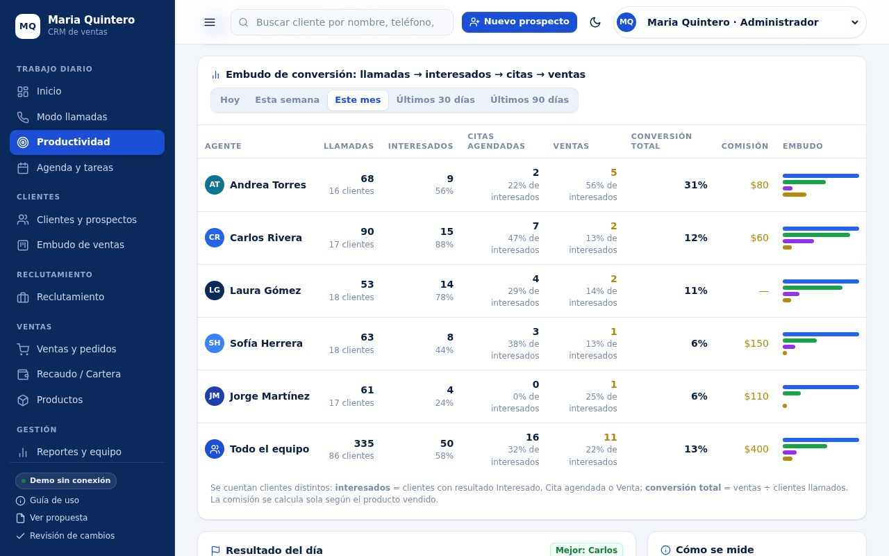
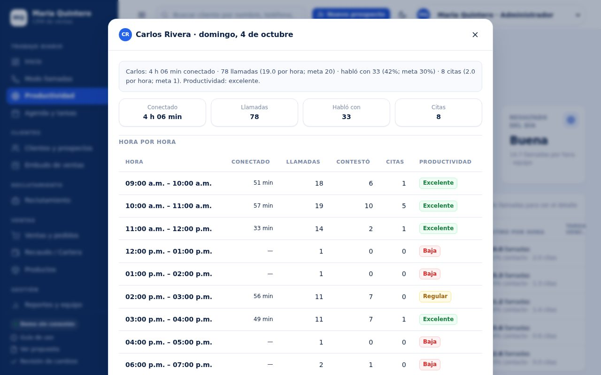
Teléfono integrado: llamar desde el computador Nuevo
Las agentes llaman desde el CRM con audífonos, sin marcar en el celular. El servicio de telefonía es Twilio: con clientes de Puerto Rico (787 y 939) la llamada sale desde el número 787; con los demás, desde el número 407 de Florida.
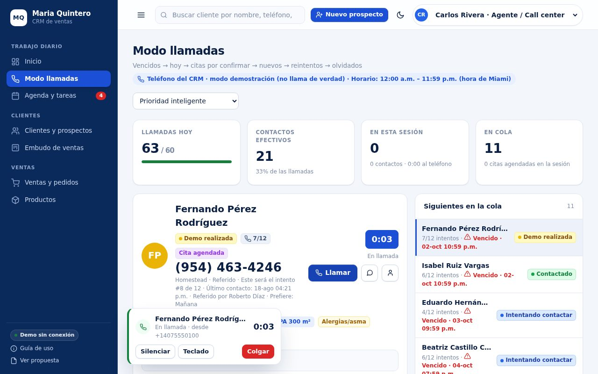
- Presiona "Llamar" en Modo llamadas o en la ficha del cliente. La primera vez el navegador pide permiso para el micrófono: acepta.
- Habla con el cliente. El tiempo corre solo desde que contesta. Con Teclado puedes marcar opciones de un menú telefónico.
- Presiona "Colgar" (o espera a que cuelgue el cliente).
- Si no contestó, el CRM guarda "No contestó" solo y pasa al siguiente cliente. Si contestó, elige el resultado; la duración ya viene puesta.
- Horario de las agentes: solo pueden llamar de 10:30 a. m. a 7:30 p. m., hora de Miami. Fuera de ese horario el botón avisa "Fuera de horario" (el servidor de Twilio también lo bloquea). La administración y la supervisión pueden llamar a cualquier hora.
- En la ficha, cada intento hecho con el teléfono dice "Teléfono del CRM", si contestaron, la duración y desde qué número se llamó. En Productividad se ven igual.
- Nunca llama a clientes en la lista de no llamar ni a números 900 / 976.
- Las llamadas que entran a los números 407 y 787 suenan en el CRM de quien se elija; si nadie contesta, van al buzón de voz.
Marcador libre: llamar a cualquier número
Con el botón del teléfono de la barra de arriba (junto a "Nuevo prospecto"), o con "Abrir marcador" en Panel admin → Conexiones, se abre un teclado para marcar cualquier número, aunque no sea cliente: un proveedor, un técnico o un número que te dejaron en un papel.
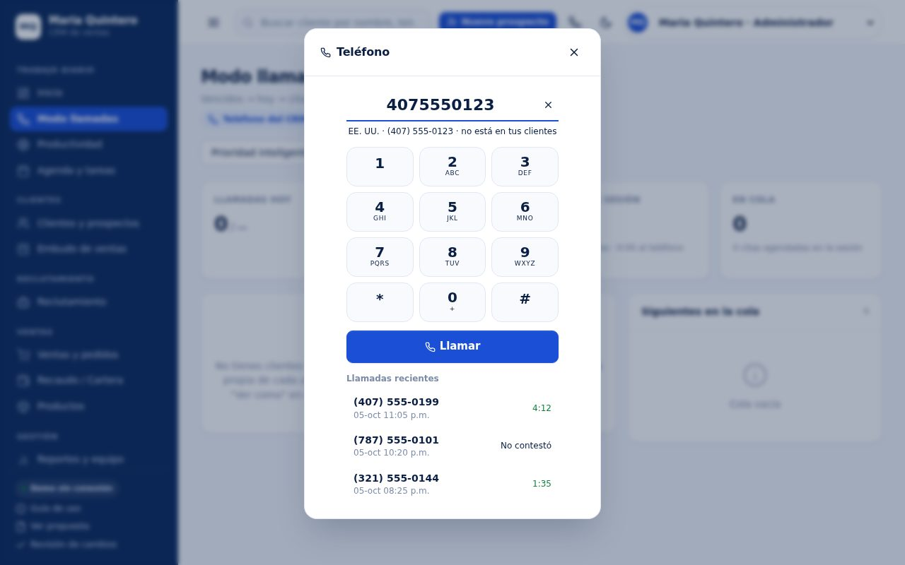
- Si el número es de un cliente, el marcador muestra su nombre y la llamada queda en su historial como cualquier otra.
- Si no es cliente y contestan, al colgar aparece "Guardar como prospecto": se crea la ficha con ese teléfono y enseguida se registra el resultado de la llamada.
- Quién lo ve: la administración y la supervisión, siempre. Las agentes, solo si la administración marca "Las agentes también pueden usar el marcador libre" en Conexiones (y siempre dentro de su horario).
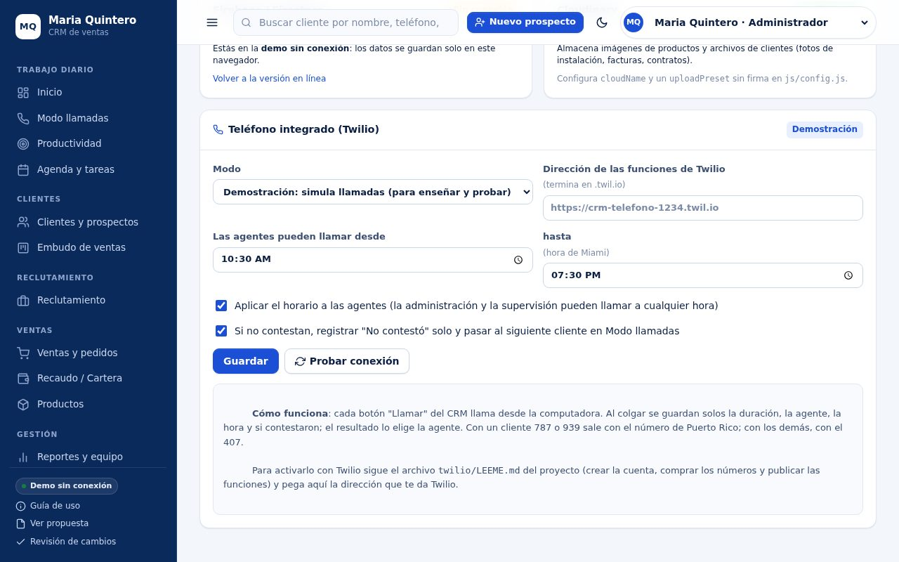
twilio/LEEME.md del proyecto y luego elige Modo: Twilio.Agenda y tareas
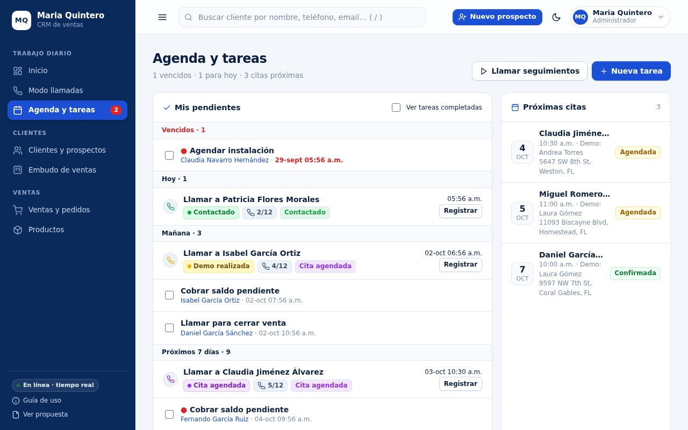
Un pendiente pasa a Vencidos en cuanto pasa su hora sin hacerse. La agenda junta todo lo que tienes que hacer en una sola lista, Mis pendientes: cada próximo seguimiento aparece como una tarea ("Llamar a Ana López") junto con las tareas que hayas creado ("enviar catálogo", "confirmar dirección"). Todo queda ordenado por fecha y hora en Vencidos, Hoy, Mañana, Próximos 7 días y Más adelante. A la derecha verás las próximas citas con su hora, dirección y quién hace la demostración.
Cumplir un seguimiento
- En "Mis pendientes", busca la línea "Llamar a…".
- Haz la llamada y presiona "Registrar": eliges el resultado, escribes una nota y, si quieres, la fecha y hora del siguiente seguimiento.
- Al guardar, ese pendiente se reemplaza solo por el siguiente seguimiento.
Crear una tarea
- Presiona "Nueva tarea", aquí o desde la ficha de un cliente.
- Escribe qué hay que hacer, la fecha y la hora, y la prioridad (normal o alta).
- Si es sobre un cliente, elígelo: la tarea aparecerá también en su ficha.
- Cuando la termines, marca la casilla. Queda registrada en el historial del cliente.
El número rojo junto a "Agenda y tareas" en el menú indica cuántos pendientes tienes vencidos. La supervisión y la administración pueden ver la agenda de cualquier persona o la de todo el equipo.
Prioridad, avisos y tareas vencidas
- Prioridad Alta primero: en cada grupo (Vencidos, Hoy, Mañana…) las tareas de prioridad Alta aparecen arriba de todo.
- Avisos: con el CRM abierto, te llega un aviso cuando es la hora de una tarea, y 15 minutos antes si es de prioridad Alta, con sonido y botones para marcarla como hecha, posponerla 15 minutos o verla. Presiona "Activar avisos" en la agenda para recibirlos también como notificación del navegador aunque estés en otra pestaña. Si el CRM está cerrado, no llegan avisos.
- Seguimientos con hora ("Llamar después"): ese día aparecen en "Hoy", a la hora elegida llega el aviso "Seguimiento: es la hora" y, si pasa la hora sin registrar la llamada, pasan a Vencidos.
- Vencidas: si la hora pasa y no se marca como hecha, queda con la etiqueta roja "Vencida hace…". Si se completa tarde, queda como "Hecha tarde". Al entrar, cada persona ve cuántas tareas vencidas tiene.
- Para la administración: arriba de la agenda aparece "Tareas vencidas del equipo" con cuántas tiene cada persona, y en Productividad la columna "Tareas venc.".
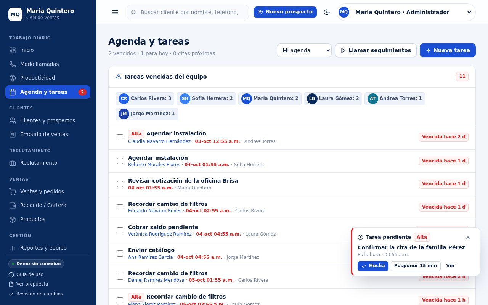
Clientes y prospectos
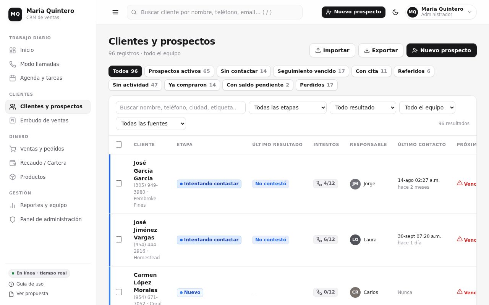
Filtros rápidos
Sin contactar
Prospectos nuevos a los que nadie ha llamado.
Seguimiento vencido
Personas a las que se quedó en llamar y no se ha hecho.
Sin actividad
Oportunidades abiertas que llevan más de 7 días sin contacto.
Con cita
Prospectos con una cita agendada o confirmada.
Referidos
Todos los que llegaron referidos por alguien.
Ya compraron
Tus clientes (etapa Venta).
Con saldo pendiente
Clientes que te deben dinero.
Perdidos
Quienes no compraron, con su motivo.
Además puedes filtrar por etapa, resultado de la última llamada, responsable y fuente, y ordenar haciendo clic en el título de cualquier columna.
Crear un prospecto
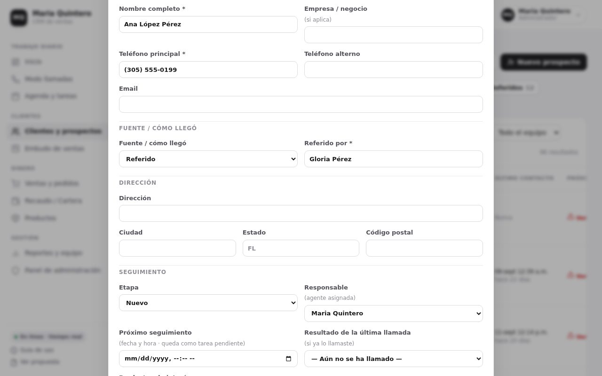
- Presiona "Nuevo prospecto" (está siempre arriba, en cualquier pantalla).
- Llena al menos el nombre y el teléfono. Si el teléfono ya existe, el CRM te avisa para no duplicar.
- Elige la fuente / cómo llegó. Si eliges Referido, aparece "Referido por": escribe el nombre de quien lo refirió (es obligatorio). Si eliges Feria / Evento, aparece "Nombre del evento".
- En Seguimiento: la etapa, el responsable (la agente asignada), el próximo seguimiento con fecha y hora y, si ya lo llamaste, el resultado de la última llamada (se cuenta como un intento).
- Llena el Perfil del cliente / hogar con lo que sepas: vivienda (dueño de casa o renta), crédito (tiene / no tiene), personas en el hogar, estado civil, mejor horario para contactar (mañana, tarde, noche o cualquier horario), contacto preferido (llamada, WhatsApp, SMS o email), mascotas y alergias / asma. Si no lo sabes, déjalo en No indicado.
- Guarda: se abre su ficha para registrar la primera llamada.
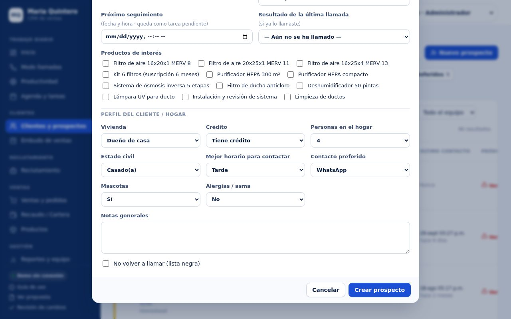
Importar una lista desde Excel
- En Excel, usa Archivo → Guardar como → CSV. La primera fila debe tener títulos como
nombre,telefono,email,ciudad,fuente,referido por,eventoynotas. - En Clientes, presiona "Importar" y elige el archivo.
- Elige a quién asignarlos. La supervisora y la dueña pueden repartirlos en partes iguales entre todas las agentes.
- Deja marcado "Omitir teléfonos que ya existen" y presiona Importar.
Acciones masivas
Marca varias casillas a la izquierda y aparece una barra para asignarlos a otra persona, moverlos de etapa, exportarlos a Excel o eliminarlos (solo la administración).
Ficha del cliente
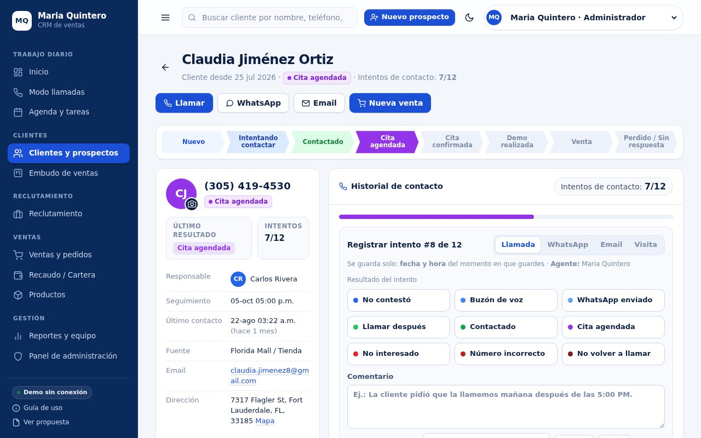
Las partes de la ficha
- Barra de etapas (arriba): haz clic en una etapa para mover al cliente. Si eliges "Perdido", el CRM te pide el motivo; si eliges "Cita agendada" o "Cita confirmada" sin cita, te pide los datos de la cita; si eliges "Venta", te ofrece registrar la venta.
- Último resultado e intentos: cómo terminó la última llamada y cuántos intentos de contacto lleva. Se actualizan solos.
- Datos: responsable, próximo seguimiento, último contacto (fecha y hora), fuente, referido por o evento, dirección con enlace a Google Maps y el perfil del cliente / hogar (vivienda, crédito, personas, estado civil, horario, contacto preferido, mascotas y alergias).
- Foto: el botón de la cámara junto a la inicial sube una foto de la persona (o la cambia o quita). Desde el celular se puede tomar con la cámara.
- Botones de contacto: Llamar, WhatsApp (con un saludo ya escrito) y Email.
- Historial de contacto: el contador Intentos de contacto: X/12, el formulario para registrar el siguiente intento y la lista de todos los intentos con su número, fecha, hora, agente, resultado y comentario.
- Notas y actividad: notas libres, citas, cambios de etapa, ventas y pagos.
- Cita: fecha, hora, dirección y quién hace la demostración, con botones para Confirmar, Demo realizada, Reagendar o Cancelar.
- Resumen financiero: cuánto ha comprado, cuánto pagó y cuánto debe.
- Ventas, tareas y archivos: sus pedidos, sus pendientes y las fotos o documentos (facturas, fotos de la instalación).
Historial de contacto: registrar un intento
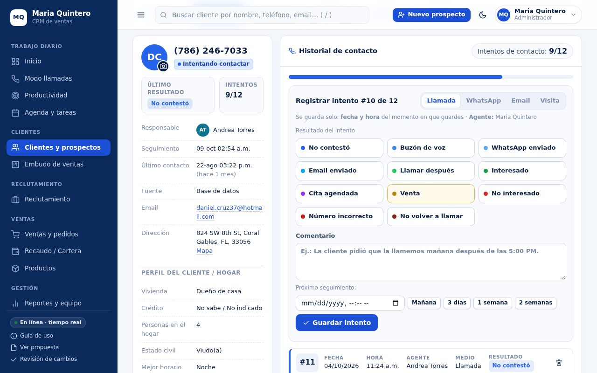
- Arriba verás "Registrar intento #N de 12". Elige el medio: Llamada, WhatsApp, Email o Visita.
- Elige el resultado. Debajo verás un aviso de lo que el CRM hará solo, por ejemplo "mover a Contactado, programar seguimiento en 2 días" o, con "Llamar después", que la fecha y la hora son obligatorias.
- Escribe el comentario (por ejemplo, "pidió que la llamemos mañana después de las 5:00 PM") y, si quieres, la fecha y hora del próximo seguimiento.
- Presiona Guardar intento. El CRM guarda solo la fecha, la hora y tu nombre, y el contador sube (por ejemplo, de 8/12 a 9/12).
Agendar y manejar una cita
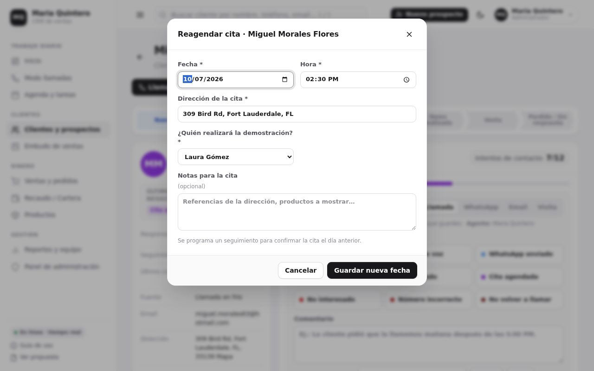
- Registra la llamada con el resultado "Cita agendada", o presiona "Agendar cita" en la tarjeta Cita de la ficha.
- Escribe la fecha, la hora, la dirección (viene llena con la del cliente) y elige quién realizará la demostración (alguien del equipo u "Otra persona").
- Al guardar, el cliente pasa a Cita agendada y queda un seguimiento para confirmar la cita el día anterior.
- Cuando el cliente confirme, presiona Confirmar; después de la visita, Demo realizada. Si cambia la fecha, Reagendar.
Embudo de ventas
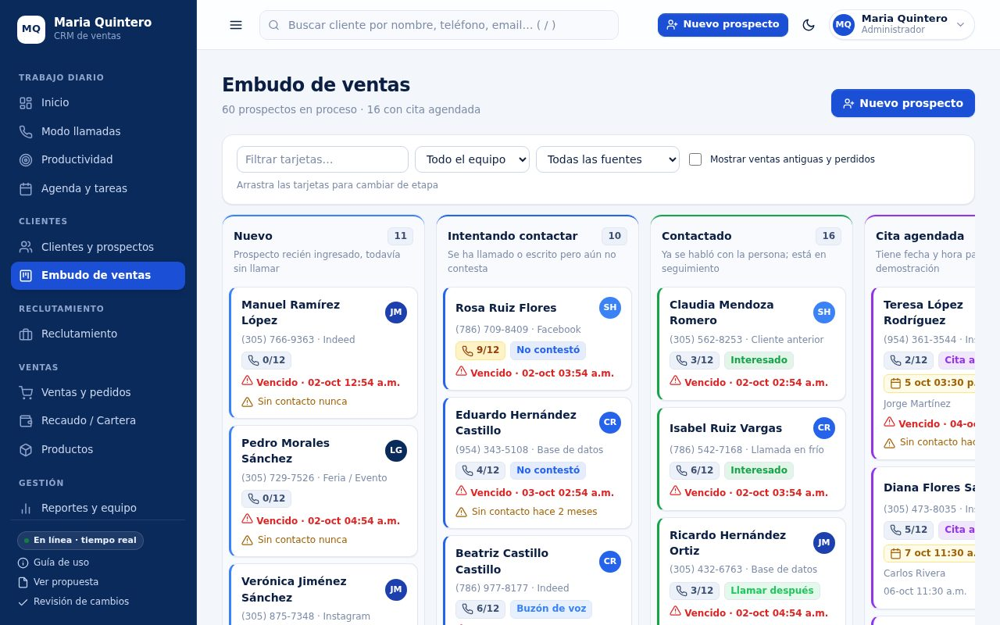
Es la misma información de Clientes, pero en forma de tablero: cada columna es una etapa y cada tarjeta es una persona. Cada tarjeta muestra el teléfono, la fuente, el último resultado, los intentos, la cita (si tiene) y el próximo seguimiento.
- Arrastra una tarjeta a otra columna para cambiarla de etapa.
- Haz clic en una tarjeta para abrir la ficha del cliente.
- Arriba de cada columna ves cuántos hay y qué significa esa etapa.
- Si arrastras a Cita agendada a alguien sin cita, el CRM te pide los datos de la cita; si lo arrastras a Venta, te ofrece registrar la venta.
Las tarjetas con el aviso "Sin contacto hace…" son oportunidades olvidadas: vale la pena llamarlas pronto.
Reclutamiento
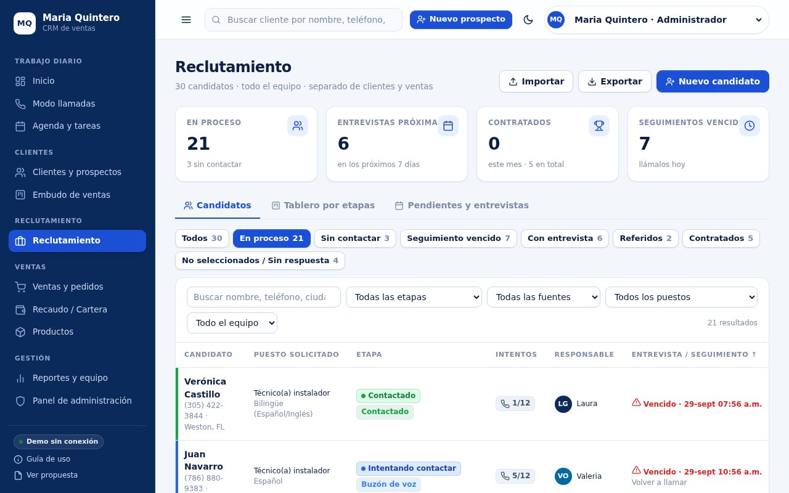
La pantalla de Reclutamiento
- Indicadores: candidatos en proceso, entrevistas de los próximos 7 días, contratados del mes y seguimientos vencidos.
- Candidatos: la lista con filtros rápidos (En proceso, Sin contactar, Seguimiento vencido, Con entrevista, Referidos, Contratados…) y filtros por etapa, fuente, puesto y responsable. La raya de color a la izquierda muestra la etapa.
- Tablero por etapas: una columna por etapa; arrastra las tarjetas para cambiarlas de etapa.
- Pendientes y entrevistas: los próximos seguimientos (vencidos, hoy y próximos) y las entrevistas agendadas con fecha, hora, lugar y entrevistador.
- Importar: sube el archivo CSV que descargas de Indeed (o un Excel guardado como CSV). Se pueden repartir entre todo el equipo y se omiten los repetidos.
Registrar un candidato
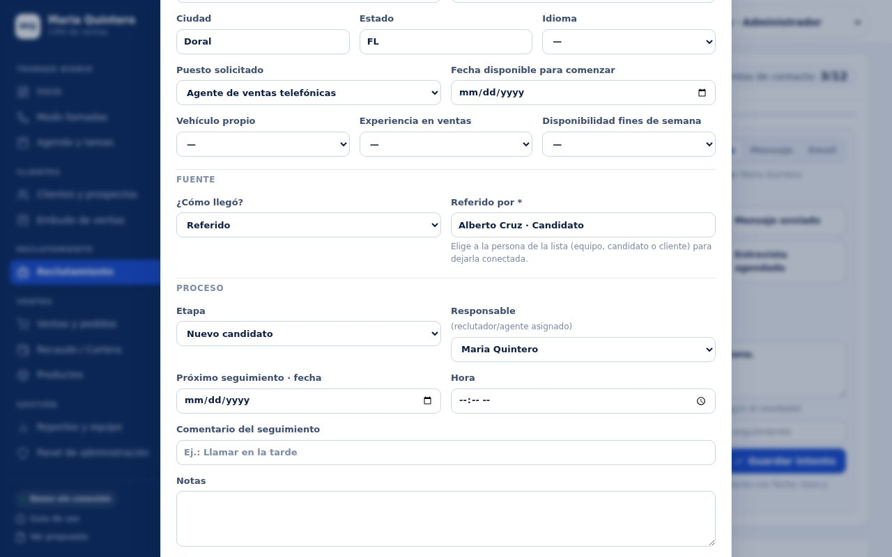
- Presiona Nuevo candidato.
- Llena los datos: nombre y apellido, teléfono, teléfono alternativo, email, ciudad, estado, idioma y puesto solicitado.
- Responde Sí / No: vehículo propio, experiencia en ventas y disponibilidad los fines de semana. Escribe la fecha disponible para comenzar y las notas.
- Elige la fuente: Indeed, Referido, Facebook, Instagram, Florida Mall / Tienda, Feria / Evento u Otra fuente.
- Si es Referido, escribe en "Referido por" y elige a la persona de la lista (alguien del equipo, otro candidato o un cliente). Así queda conectada: en la ficha de esa persona verás Candidatos que refirió.
- Elige el responsable (quien lo va a reclutar) y, si quieres, el próximo seguimiento con fecha, hora y comentario.
Las etapas del candidato
La ficha del candidato
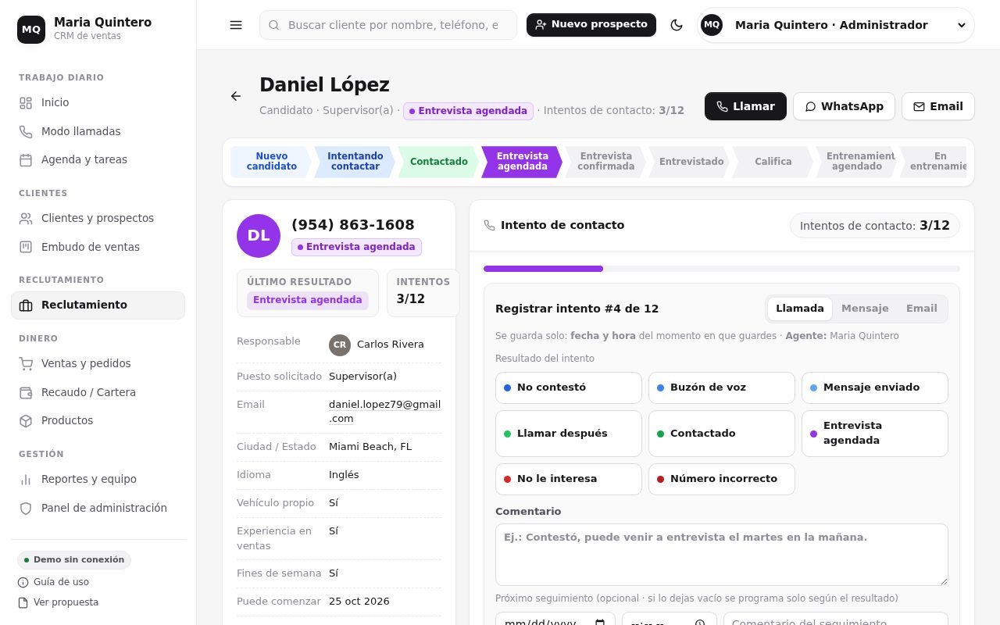
- Intento de contacto: elige el medio (Llamada, Mensaje o Email) y el resultado (No contestó, Buzón de voz, Mensaje enviado, Llamar después, Contactado, Entrevista agendada, No le interesa o Número incorrecto). Escribe un comentario y, si quieres, el próximo seguimiento con fecha, hora y comentario.
- Presiona Guardar intento: la fecha, la hora y tu nombre se guardan solos y el contador sube (por ejemplo, 3/12). Igual que en ventas, a los 12 intentos sin respuesta el candidato pasa solo a Sin respuesta.
- Historial: todas las llamadas, mensajes, intentos, entrevistas, cambios de etapa y comentarios, cada uno con quién lo hizo, fecha y hora. Usa Agregar comentario para dejar notas; los filtros de arriba muestran solo un tipo.
- Seguimiento (a la derecha): cambia la fecha, la hora y el comentario del próximo seguimiento en cualquier momento.
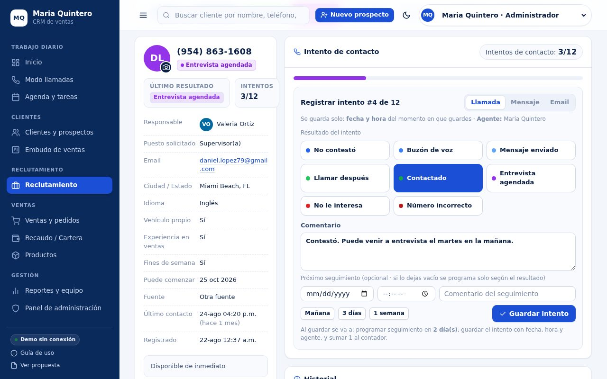
Agendar y manejar la entrevista
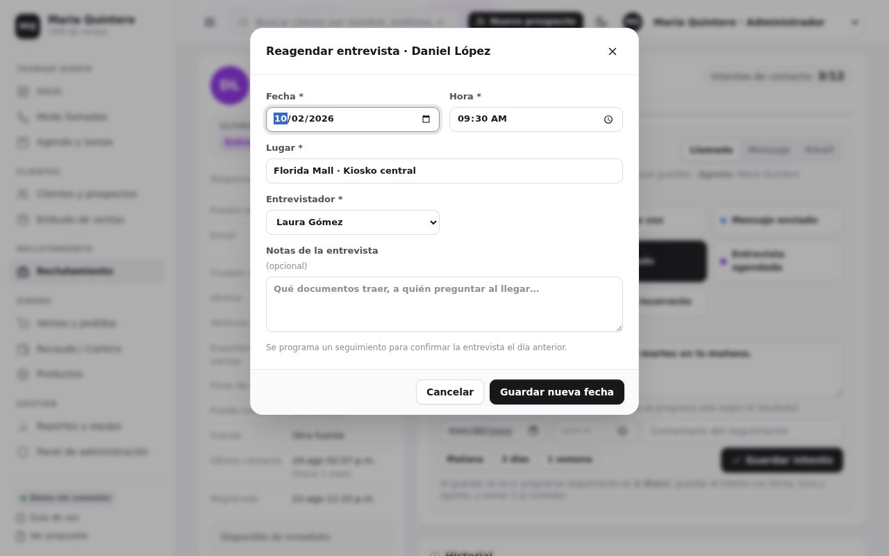
- Guarda un intento con el resultado "Entrevista agendada", o presiona Agendar entrevista en la tarjeta Entrevista.
- Escribe la fecha, la hora, el lugar, elige al entrevistador y agrega notas (por ejemplo, "traer identificación"). Queda un seguimiento para confirmarla el día anterior.
- Cuando la persona confirme, presiona Confirmar. Si cambia la fecha, Reagendar; si no va, Cancelar.
- Después de la entrevista, presiona Entrevista realizada, escribe las notas de la entrevista y elige el resultado: Califica, No seleccionado o Pendiente de decidir.
- Sigue moviendo la etapa con la barra de arriba: Entrenamiento agendado, En entrenamiento y Contratado.
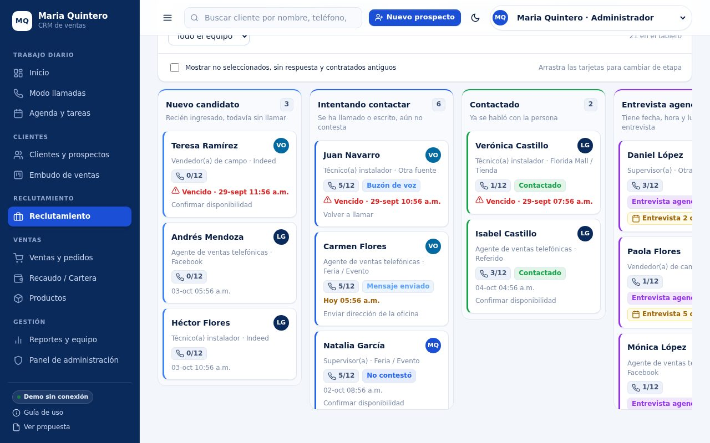
Ventas y pedidos
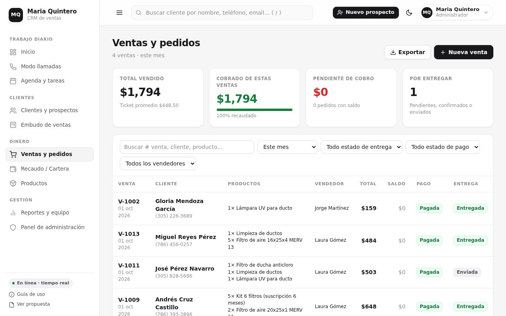
Registrar una venta
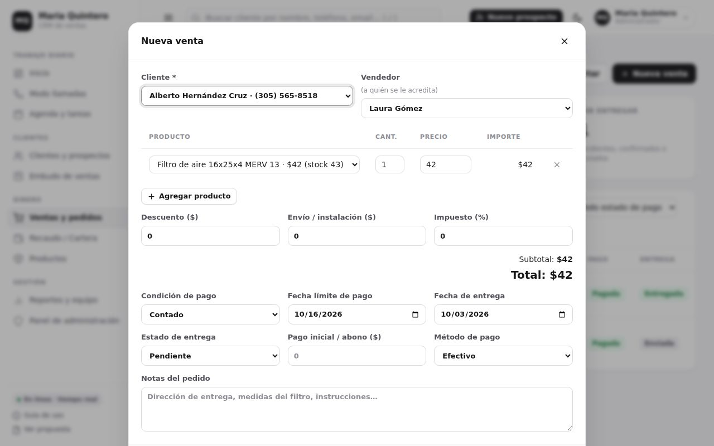
- Presiona "Nueva venta" aquí, en la ficha del cliente o moviendo al cliente a la etapa Venta.
- Elige el cliente y el canal de la venta: Llamada / Call center, Instagram, Facebook, WhatsApp, Página web, Tienda, Referido o Feria / Evento (se sugiere solo según la fuente del cliente). Los canales se cambian en Panel de administración → Configuración.
- Agrega los productos con su cantidad. El precio sale del catálogo, pero lo puedes ajustar. Para algo que no está en el catálogo, usa "Otro (escribir)".
- Si aplica, agrega descuento, envío o instalación e impuesto.
- Elige la condición de pago (contado, cuotas, crédito), la fecha límite de pago y la fecha de entrega.
- Si el cliente pagó algo en ese momento, escríbelo en "Pago inicial / abono" con su método.
- Presiona "Registrar venta". El inventario se descuenta solo y el cliente pasa a Venta.
Después de la venta
- Estado de entrega: Pendiente → Confirmada → Enviada → Entregada (o Cancelada). Se cambia desde el detalle de la venta.
- Estado de pago: se calcula solo. Sin pago, Abono parcial o Pagada.
- Recibo: el botón "Recibo" abre un comprobante listo para imprimir o guardar en PDF.
- A quién se le acredita: la venta cuenta para la persona responsable del cliente. La supervisora y la dueña pueden elegir otro vendedor.
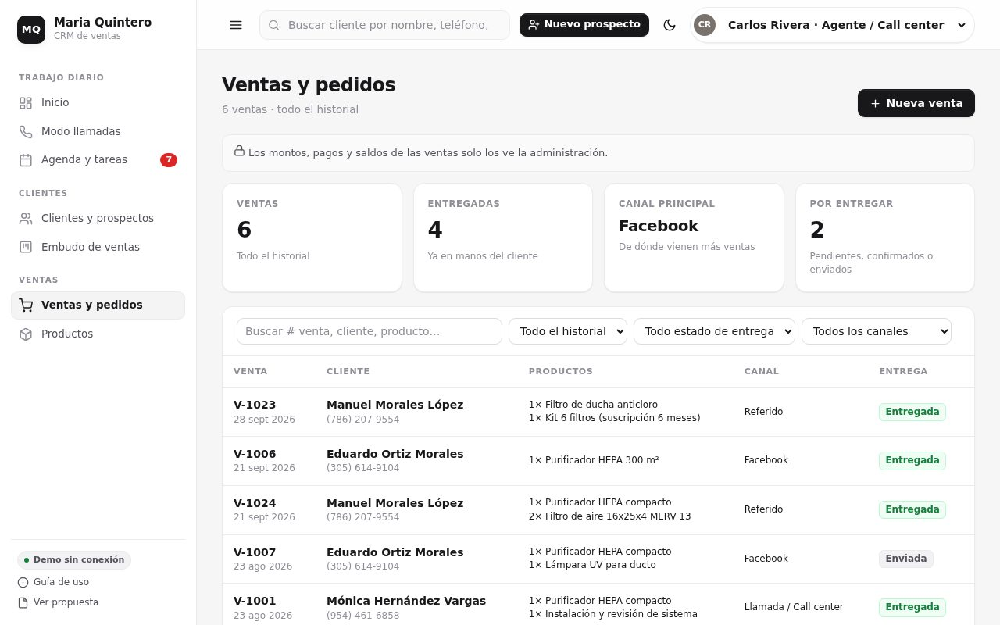
Venta desde una llamada y comisiones
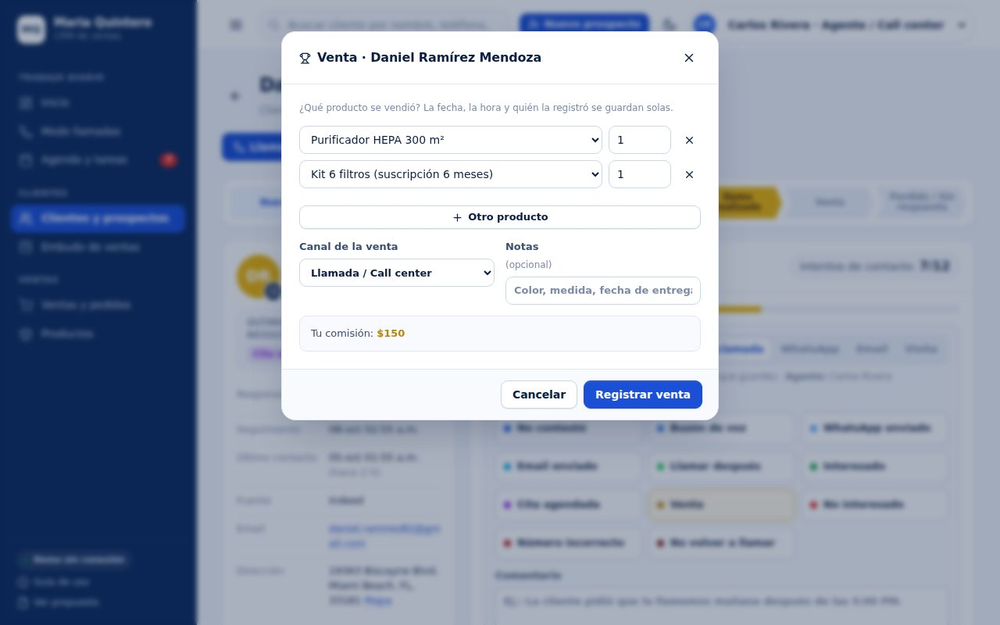
- En la ficha del cliente o en Modo llamadas elige el resultado Venta (botón dorado) y guarda.
- Se abre un formulario corto: elige el producto vendido y la cantidad (puedes agregar otro producto), el canal y una nota.
- Al registrar, la venta queda a nombre de quien la hizo y el cliente pasa a la etapa Venta. La agente no ve quién es el vendedor ni los montos; la administración sí.
- Comisión por producto: en Productos, cada producto tiene su "Comisión por unidad" (por ejemplo $50 o $100). Al vender, el CRM la calcula sola: cantidad × comisión de cada producto.
- La comisión queda guardada en la venta: si después cambias la comisión de un producto, las ventas anteriores conservan la que tenían.
- Quién la ve: la administración ve todas (Ventas, Reportes y Productividad). Cada agente ve solo las suyas en Inicio ("Mis comisiones"), en Ventas y en Productos; se puede apagar en Panel de administración → Configuración.
Recaudo y cartera
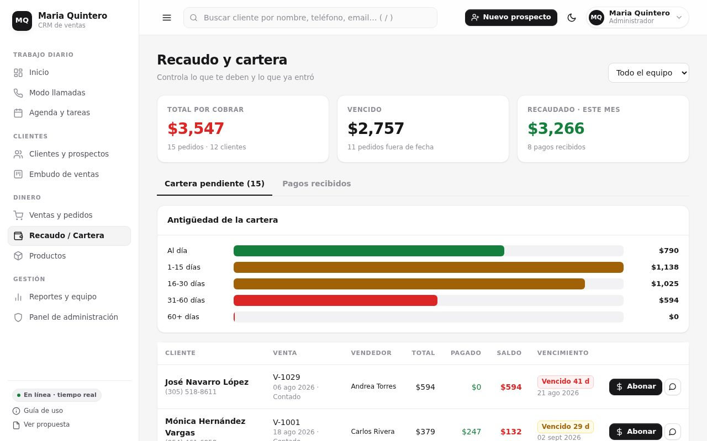
Tiene dos pestañas: Cartera pendiente (lo que te deben) y Pagos recibidos (lo que ya entró, por fecha y por método de pago).
La antigüedad de la cartera
Agrupa las deudas según cuántos días llevan vencidas: al día, 1–15, 16–30, 31–60 y más de 60 días. Mientras más vieja la deuda, más difícil de cobrar: empieza siempre por las rojas.
Registrar un pago o abono
- Busca al cliente en la lista y presiona "Abonar" (también puedes hacerlo desde el detalle de la venta).
- Escribe el monto. Viene lleno con el saldo completo; cámbialo si es un abono parcial.
- Elige el método (efectivo, transferencia, tarjeta, Zelle…), la fecha y, si hay, el número de comprobante.
- Presiona "Registrar pago". El saldo se actualiza al instante y queda anotado en el historial del cliente.
Productos
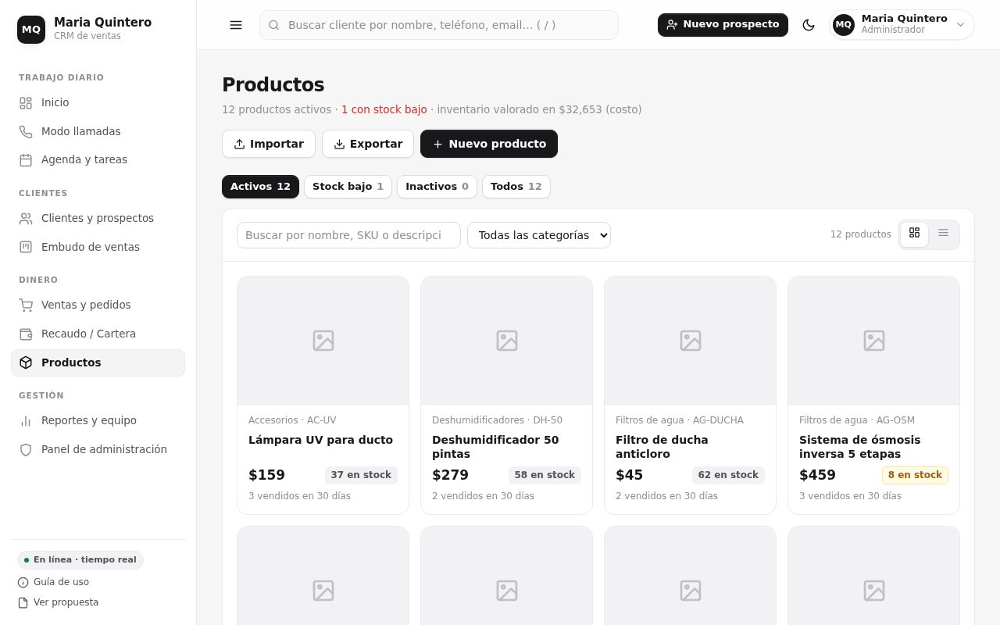
Agregar un producto
- Presiona "Nuevo producto".
- Arrastra una foto al cuadro de la izquierda (o haz clic para elegirla). Se guarda en la nube.
- Escribe el nombre y el precio, los dos datos obligatorios.
- Elige la categoría o crea una nueva con "+ Nueva categoría…".
- Si escribes el costo, el CRM calcula el margen al instante. Solo la administración ve costos y márgenes.
- Para productos físicos, deja marcado "Controlar inventario" y escribe el stock y el mínimo para recibir alerta. Para servicios (instalación, limpieza), desmárcalo.
- En descripción, escribe los argumentos de venta: beneficios, medidas, cada cuánto se cambia.
Otras acciones
- Importar desde Excel: descarga la plantilla, llénala y súbela. Si el SKU ya existe, el producto se actualiza en vez de duplicarse.
- Duplicar: para crear rápido una variante (otra medida u otro precio).
- Ajustar stock: entradas, salidas o conteo físico, con el motivo.
- Desactivar: si ya no lo vendes, desactívalo en vez de borrarlo. Así no se pierde en las ventas pasadas.
- Filtros: Activos, Stock bajo (los que hay que pedir) e Inactivos.
Reportes y equipo
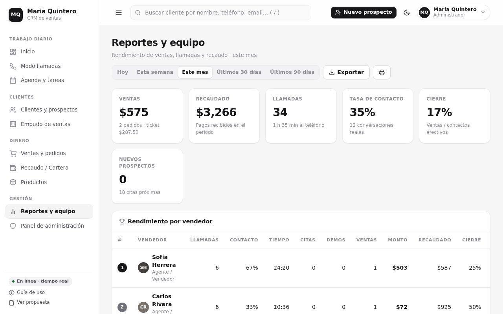
Cómo leer los números del equipo
| Indicador | Qué significa | Cómo usarlo |
|---|---|---|
| Llamadas | Llamadas y WhatsApp registrados. | Mide el esfuerzo. Compáralo con la meta diaria de cada persona. |
| Contacto | % de llamadas en que sí se habló con alguien. | Si es bajo, prueba otros horarios o revisa la calidad de la lista. |
| Tiempo | Tiempo total al teléfono. | Mucho tiempo y pocas ventas puede indicar que hace falta mejorar el guion. |
| Citas y demos | Citas agendadas y demostraciones realizadas en el periodo. | Es el mejor anticipo de las ventas de la semana siguiente. |
| Cierre | Ventas ÷ contactos efectivos. | Muestra quién convierte mejor las conversaciones en ventas. Ideal para que enseñe al resto. |
| Cartera | Saldo pendiente de las ventas de esa persona. | Vender sin cobrar no sirve: revísalo junto con las ventas. |
Más abajo: llamadas por día, resultados de las llamadas, de dónde vienen los clientes (qué fuente vende más), ¿quién trae referidos? (cuántos refirió cada persona y cuántos compraron), productos más vendidos y por qué se pierden ventas. Todo se puede exportar a Excel o imprimir.
Panel de administración
Crear un usuario y darle acceso
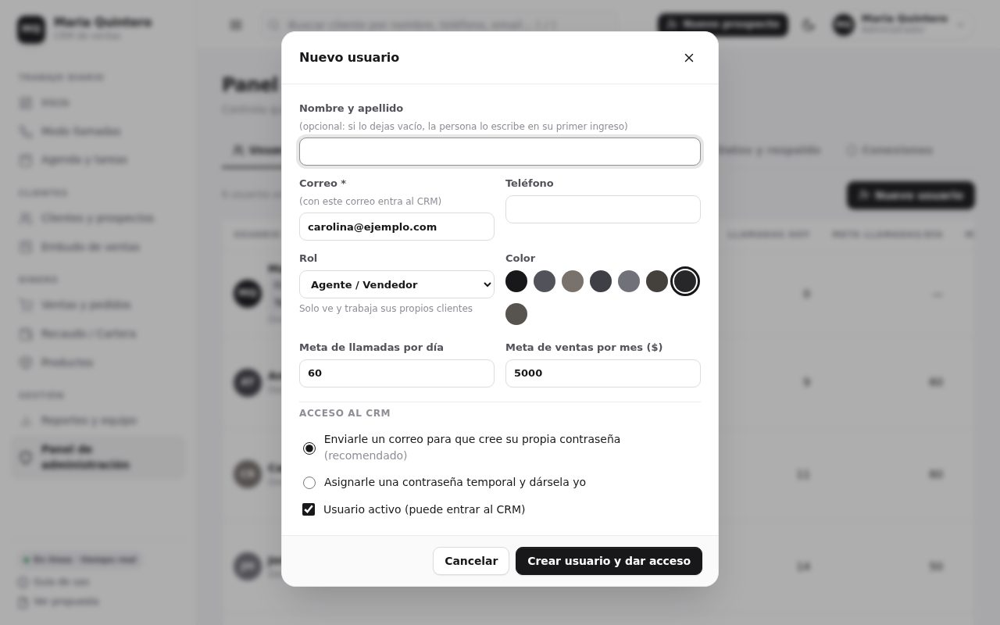
- En Usuarios y roles, presiona "Nuevo usuario".
- Escribe su correo: es con el que va a entrar. El nombre es opcional, porque la persona lo escribe en su primer ingreso.
- Elige el rol (debajo aparece qué puede hacer) y sus metas: llamadas por día y ventas por mes.
- Elige cómo recibirá su contraseña:
- Enviarle un correo (recomendado): le llega un enlace para crear su propia contraseña. Tú nunca la conoces.
- Contraseña temporal: tú escribes una (mínimo 6 caracteres) y se la das. Después puede cambiarla desde su menú.
- Presiona "Crear usuario y dar acceso". La persona ya puede entrar, y en su primer ingreso escribirá su nombre y apellido.
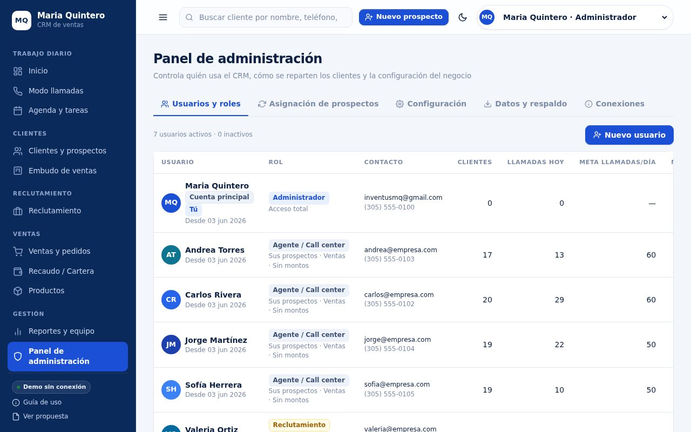
- Cambiar el rol o las metas: botón Editar. El cambio de rol aplica de inmediato.
- Olvidó su contraseña: en Editar, usa "Enviar enlace de contraseña".
- Alguien deja de trabajar: en Editar, desmarca "Usuario activo". Pierde el acceso al instante (si estaba conectada, se cierra su sesión), pero no se borra nada. El CRM te lleva a Asignación para pasar sus clientes a otra persona.
- La cuenta principal (
inventusmq@gmail.com) aparece con la etiqueta "Cuenta principal": siempre es administradora y no se puede desactivar ni cambiar de rol. - El correo de un usuario que ya tiene acceso no se puede cambiar. Si necesitas otro correo, crea un usuario nuevo y transfiérele la cartera.
"Ver como": el CRM desde los ojos de otra persona
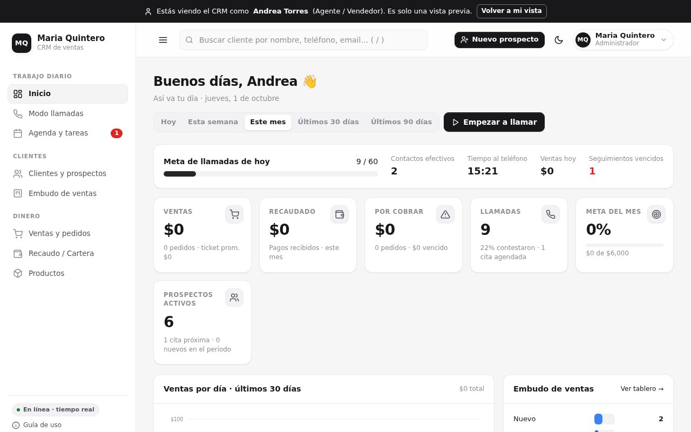
El botón "Ver como" te muestra el CRM tal como lo ve otra persona: sus clientes, su meta y su agenda. Sirve para acompañarla, revisar su trabajo o capacitarla. Arriba aparece una barra negra; con "Volver a mi vista" regresas a la tuya.
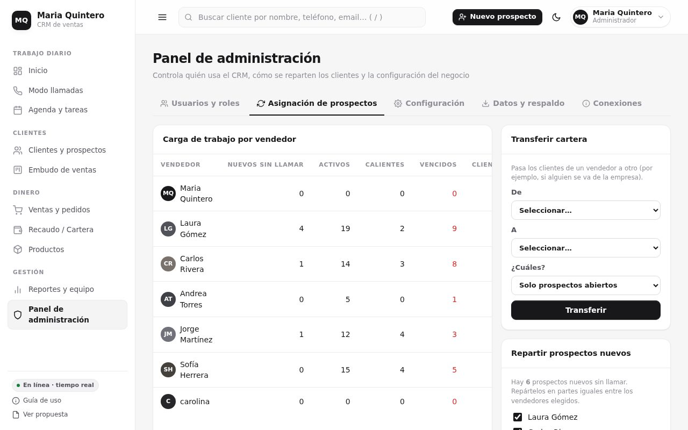
Asignación de prospectos
- Carga de trabajo: cuántos nuevos, activos, con cita y vencidos tiene cada persona.
- Transferir cartera: pasa los clientes de una persona a otra (por ejemplo, si alguien se va).
- Repartir prospectos nuevos: distribuye en partes iguales los prospectos sin llamar entre las personas que elijas.
Configuración
Nombre del negocio, moneda (al cambiarla se ajusta solo el formato del país), código de país para WhatsApp, cuántos días sin contacto cuentan como "olvidado", fuentes de prospectos, motivos de pérdida, categorías de productos y el guion de llamada. El guion puede usar {nombre}, {agente}, {empresa} y {ciudad}, que se reemplazan solos.
Datos y respaldo
- Descargar respaldo: una copia completa de toda la información. Recomendado cada semana.
- Restaurar respaldo: vuelve a cargar una copia (reemplaza lo actual).
- Borrar todo y empezar de cero: reinicia el CRM para todo el equipo (clientes, ventas, pagos, tareas y productos). Conserva la configuración y todos los usuarios con acceso. Úsalo solo si de verdad quieres empezar de nuevo; después, el Inicio te muestra la lista de primeros pasos.
- Practicar: la demo sin conexión tiene datos de ejemplo y se guarda solo en tu navegador. Ahí puedes probar todo sin afectar los datos reales.
Rutinas recomendadas
Día de una agente
Día de la supervisora
Semana de la dueña
Atajos y trucos
| Atajo | Qué hace |
|---|---|
| / | Va al buscador de clientes desde cualquier pantalla. |
| ↑ ↓ Enter | Recorre los resultados del buscador y abre el elegido. |
| 1 … 9 | En Modo llamadas, elige el resultado de la llamada. |
| Esc | Cierra cualquier ventana. |
| Botón 🌙 | Cambia entre tema claro y oscuro. |
- Desde el celular, el botón "Llamar" marca directo y el de WhatsApp abre el chat con el cliente.
- Si en el buscador no aparece nadie, puedes crear el prospecto ahí mismo con lo que escribiste.
- Cualquier lista (clientes, ventas, productos, reportes) se puede exportar a Excel.
- Si se cae el internet, el CRM sigue funcionando y sincroniza solo al volver la conexión.
Preguntas frecuentes
No me llegó el correo para crear mi contraseña
Revisa la carpeta de spam o promociones; el remitente es Firebase (noreply@…firebaseapp.com). Si no está, en la pantalla de ingreso usa "¿Olvidaste tu contraseña?" con tu correo, o pide a la administración que te lo reenvíe desde Editar usuario → "Enviar enlace de contraseña".
Dice "Tu correo no tiene acceso a este CRM"
Ese correo no tiene un usuario creado, o está escrito diferente. Pide a la administración que te cree el usuario con ese mismo correo.
Dice "Tu usuario está desactivado"
La administración desactivó tu acceso. Si es un error, pídele que te vuelva a activar en Panel admin → Usuarios → Editar.
Me equivoqué al escribir mi nombre en el primer ingreso
Abre tu menú (arriba a la derecha) → "Mi perfil" y corrígelo. El cambio se ve en todo el CRM.
Un prospecto pasó solo a "Perdido / Sin respuesta"
Llegó a 12 intentos sin que se lograra hablar con la persona. Quedó archivado con todo su historial. Si la persona aparece después, abre su ficha y cámbiala de etapa: vuelve a estar activa.
Me equivoqué al registrar un intento
Solo la administración puede borrar intentos (ícono de papelera en la lista de intentos). Al borrarlo, el contador se recalcula. Así el historial de quién llamó y cuándo queda confiable.
¿Dónde anoto quién me refirió a un cliente?
En el formulario del prospecto, elige la fuente Referido y aparecerá el campo "Referido por". En Reportes, la tabla "¿Quién trae referidos?" muestra cuántos refirió cada persona.
El cliente quiere cambiar la fecha de la cita
En la ficha, tarjeta Cita → Reagendar, o registra la llamada con el resultado Reagendar. Cambias la fecha y hora y la cita vuelve a quedar "agendada" para confirmarla.
No veo a un cliente que sé que existe
Si eres agente, solo ves los clientes asignados a ti. Pídele a la supervisora que te lo asigne. Si eres supervisora o dueña, revisa que no haya filtros activos en la lista (botón "Limpiar").
¿Cómo cambio a un cliente de agente?
Desde su ficha, con "Reasignar a…", o en la lista de clientes marcando varios y usando "Asignar a…". Solo la supervisora y la administración pueden hacerlo.
El cliente pagó en dos partes, ¿cómo lo anoto?
Registra cada pago por separado con "Abonar" en Recaudo o en el detalle de la venta. El CRM suma los pagos y muestra el saldo que queda.
Un producto ya no se vende, ¿lo borro?
Mejor desactívalo (desmarca "Activo" en el producto). Deja de aparecer al vender, pero las ventas pasadas lo conservan.
La foto del producto no se sube
Verifica que sea una imagen (JPG, PNG o WEBP) de menos de 10 MB. Si el CRM muestra un error de Cloudinary, la administración debe revisar que el "upload preset" esté en modo Unsigned.
Aparece "No se pudo conectar con la base de datos"
Revisa tu internet y presiona "Reintentar". Si el mensaje habla de permisos, la administración debe revisar las reglas de Firestore en la consola de Firebase.
¿Qué pasa si dos personas editan al mismo cliente?
Cada cambio se guarda al instante y se ve en tiempo real. Si dos personas cambian el mismo dato a la vez, queda el último que se guardó. Por eso cada cliente tiene un responsable.
¿Cuántos datos gasta el CRM del plan gratis de Firebase?
El plan gratis permite 50.000 lecturas y 20.000 escrituras por día. Para ahorrar, cada agente solo descarga sus clientes, sus llamadas y sus tareas; la administración recibe en vivo los últimos 95 días de actividad, y el historial completo de un cliente se descarga solo al abrir su ficha. El tiempo conectado se guarda como máximo cada 5 minutos por persona y el panel de Productividad no hace lecturas extra, salvo una por persona para el tiempo conectado.
¿Las llamadas quedan registradas solas?
Con el teléfono integrado, sí: cada llamada guarda sola la hora, la duración, la agente y si contestaron; si no contestaron se registra "No contestó" sin hacer nada. La agente solo elige el resultado cuando sí contestan.
El botón Llamar dice "Fuera de horario"
Las agentes solo pueden llamar de 10:30 a. m. a 7:30 p. m., hora de Miami. El horario lo cambia la administración en Panel admin → Conexiones → Teléfono integrado.
Con el teléfono integrado no se escucha
Revisa que el navegador tenga permiso para el micrófono (el candado junto a la dirección) y que los audífonos estén elegidos como entrada y salida en el computador. Usa Chrome o Edge.
¿Dónde veo todo lo que se ha cambiado en el CRM?
En la página Revisión de cambios (/revision): cada cambio explicado, cómo comprobarlo y un checklist para marcar lo que ya revisaste.
¿Por qué los candidatos no aparecen en Clientes?
Porque Reclutamiento es un módulo aparte: los candidatos de Indeed, referidos o ferias nunca se mezclan con los prospectos y clientes de ventas. Los encuentras en el menú Reclutamiento.
Reclutamiento dice "Falta activar Reclutamiento en la base de datos"
La administración debe copiar las reglas nuevas del archivo firestore.rules en Firebase → Firestore Database → Reglas y presionar Publicar. El resto del CRM sigue funcionando mientras tanto.
¿Cómo empiezo a usarlo con mis datos reales?
El CRM en línea ya empieza vacío. Sigue la lista de primeros pasos que aparece en Inicio: agrega a tu equipo, carga tus productos, importa tus clientes, registra la primera llamada y la primera venta.